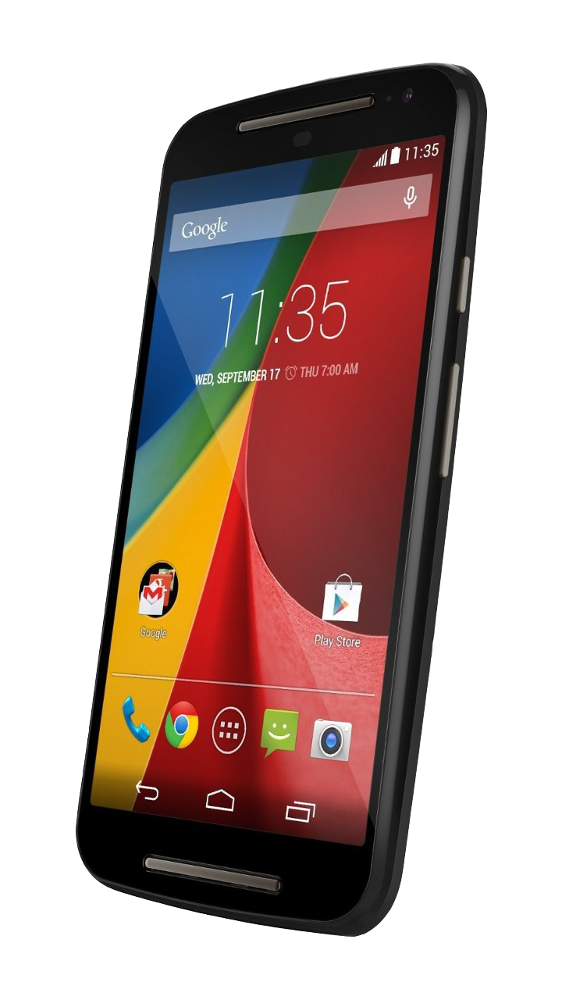

Inicio
Equipos
Moto E 2014
ROMS
KERNELS
Moto E 2015 3G
ROMS
KERNELS
Moto E 2015 4G
ROMS
KERNELS
Moto G 2014
ROMS
KERNELS
Moto G 2015
ROMS
KERNELS
GAPPS
Acerca de

Moto G 2014-(titan)-KERNELS
MonsterKernel - CM/AOSP